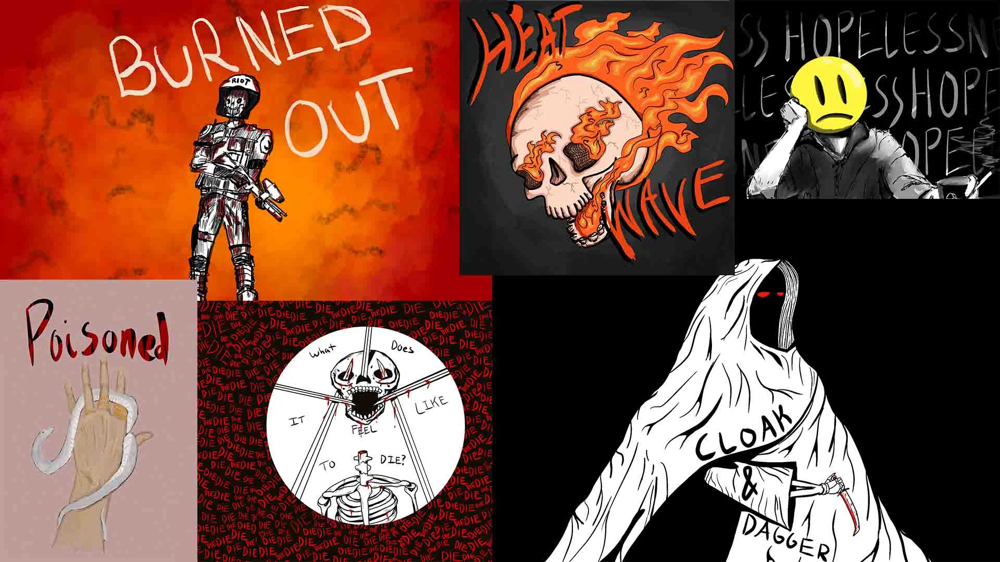
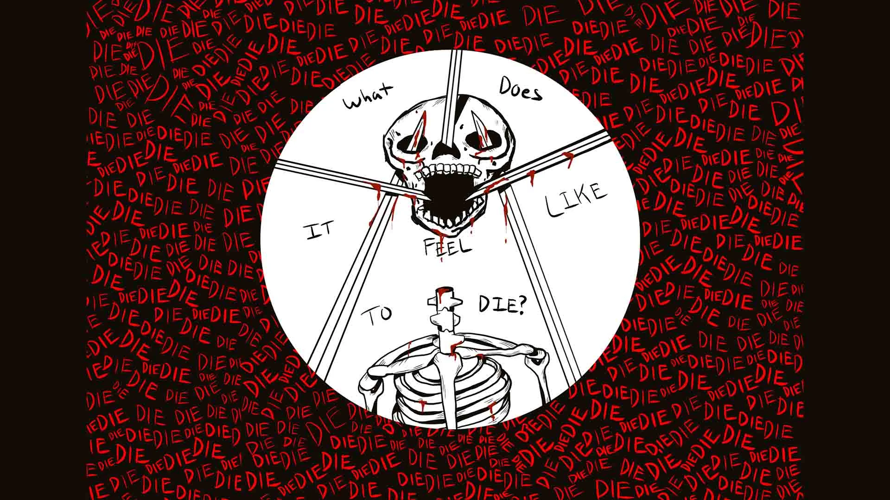
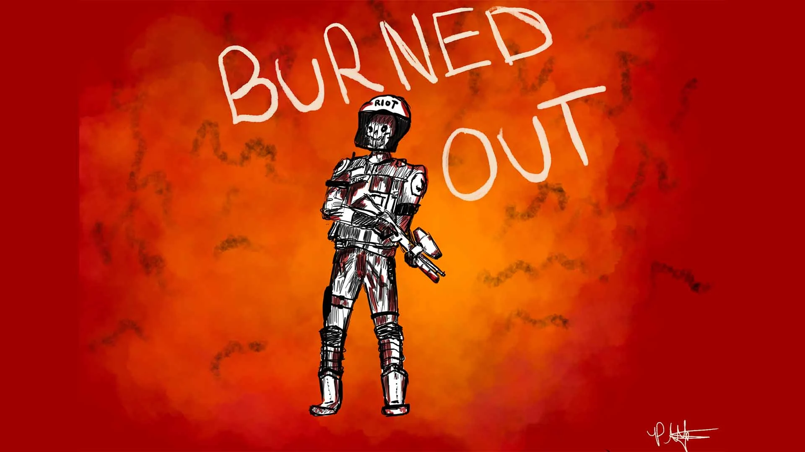
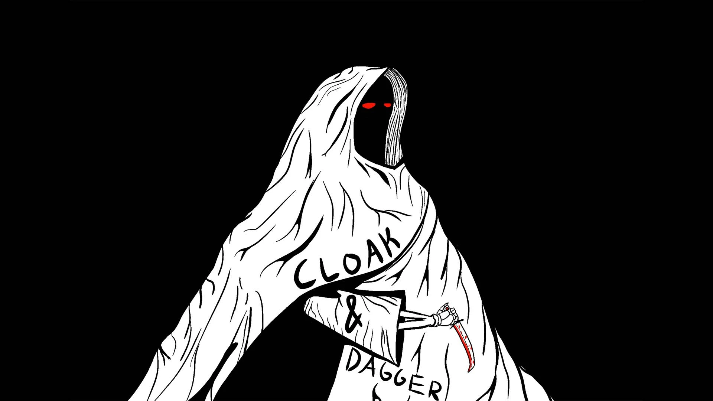
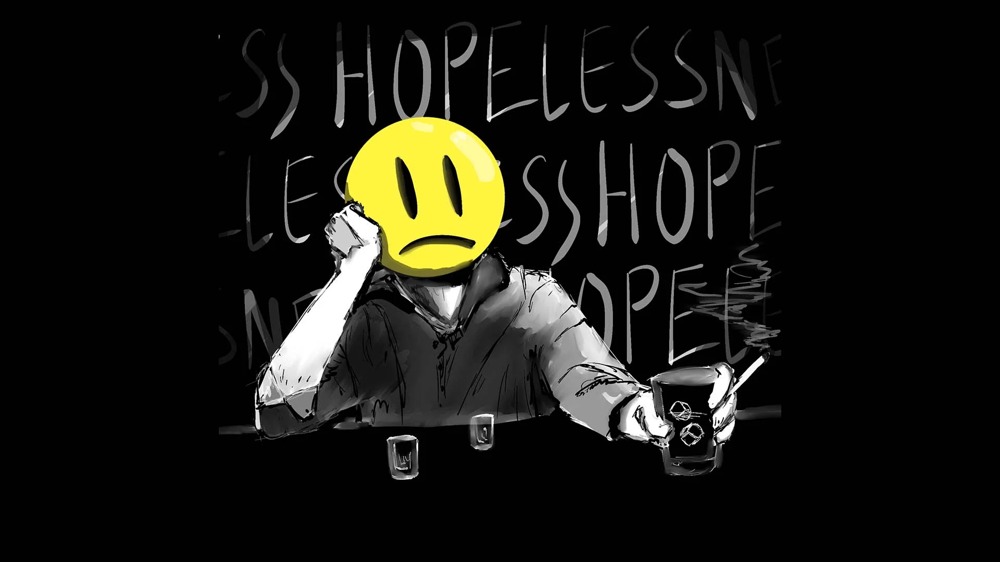
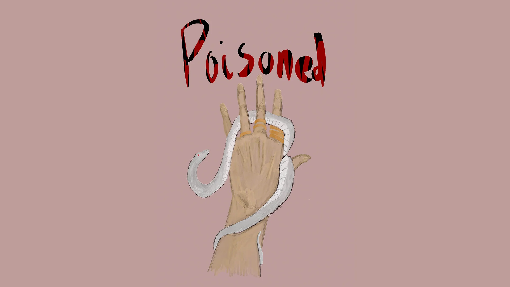
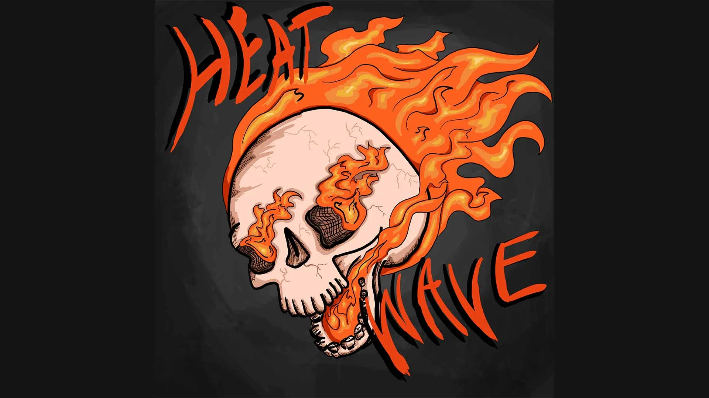

These pieces are inspired by song lyrics, poems and other texts which inspired me to create art. Everything featured here was created digitally with Procreate on the iPad Pro.

WHAT DOES IT FEEL LIKE

BURNED OUT

CLOAK AND DAGGER

SIDE EFFECTS

POISONED

HEAT WAVE